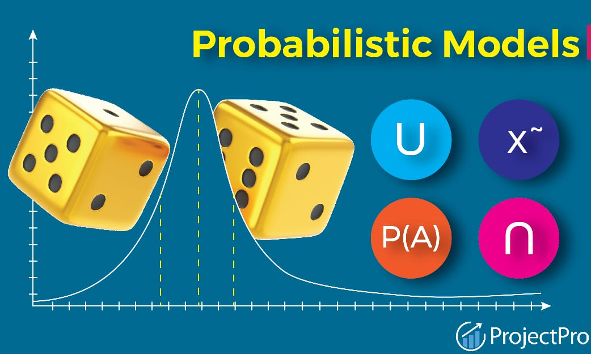

Probabilistic Modeling: :
1.Classification by Density Estimation:
- This involves modeling the probability distribution of each class and then using Bayes' theorem to compute the posterior probability of each class given the input features. It's commonly used in Gaussian Mixture Models (GMM) and kernel density estimation.
- Click here for YOUTUBE Class
2.Statistical Estimation:
- Refers to the process of estimating parameters of a probability distribution from observed data. Maximum Likelihood Estimation (MLE) and Maximum A Posteriori (MAP) estimation are common techniques.
- Click here for YOUTUBE Class
3.Naïve Bayes Models:
- A simple probabilistic classifier based on applying Bayes' theorem with strong (naïve) independence assumptions between the features.
- Click here for YOUTUBE Class

Neural Networks:
1.Bio-inspired Multi-Layer Networks:
- Artificial Neural Networks (ANNs) are inspired by the structure and function of the human brain. Multi-layer networks, particularly deep neural networks, consist of multiple layers of interconnected neurons.
- Click here for YOUTUBE Class
2.The Back-propagation Algorithm:
- A key algorithm for training neural networks. It involves calculating the gradient of the loss function with respect to the weights of the network and using this gradient to update the weights in the opposite direction to minimize the loss.
- Click here for YOUTUBE Class
3.Initialization and Convergence of Neural Networks:
- Proper initialization of the neural network weights is crucial for effective training. Convergence refers to the process of the network reaching a stable state where further training does not significantly improve performance.
- Click here for YOUTUBE Class
4.Beyond Two Layers, Breadth vs Depth:
- Traditional neural networks typically have one or two hidden layers. Beyond two layers refers to deep neural networks (DNNs) with many hidden layers. Breadth vs depth refers to the trade-off between having more layers (depth) versus having more neurons in each layer (breadth).
- Click here for YOUTUBE Class
5.Basis Functions:
- In the context of neural networks, basis functions are the functions computed by individual neurons in the network. They transform the input data into a higher-dimensional space where it becomes easier to separate classes.
- Click here for YOUTUBE Class